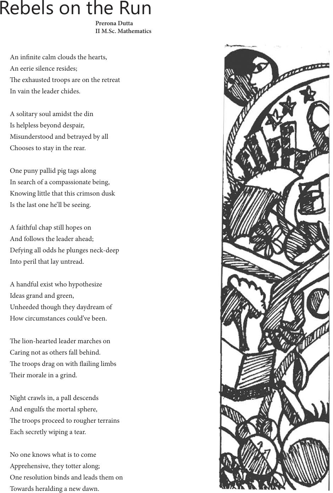

An innite calm clouds the hearts,
An eerie silence resides;
e exhausted troops are on the retreat
In vain the leader chides.
A solitary soul amidst the din
Is helpless beyond despair,
Misunderstood and betrayed by all
Chooses to stay in the rear.
One puny pallid pig tags along
In search of a compassionate being,
Knowing little that this crimson dusk
Is the last one he’ll be seeing.
A faithful chap still hopes on
And follows the leader ahead;
Defying all odds he plunges neck-deep
Into peril that lay untread.
A handful exist who hypothesize
Ideas grand and green,
Unheeded though they daydream of
How circumstances could’ve been.
e lion-hearted leader marches on
Caring not as others fall behind.
e troops drag on with ailing limbs
eir morale in a grind.
Night crawls in, a pall descends
And engulfs the mortal sphere,
e troops proceed to rougher terrains
Each secretly wiping a tear.
No one knows what is to come
Apprehensive, they totter along;
One resolution binds and leads them on
Towards heralding a new dawn.
Rebels on the Run
Prerona Dutta
II M.Sc. Mathematics